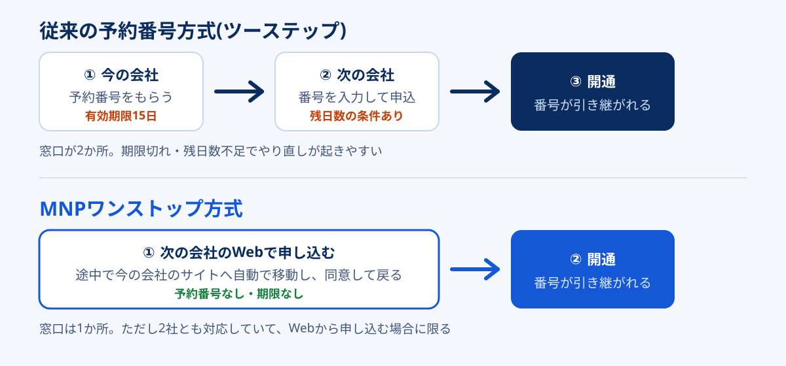

「MNPワンストップなら予約番号はいらない」——この説明は半分正しくて、半分足りません。足りないのは「誰から誰へ移るときに」という部分です。ワンストップが使えるかどうかは乗り換え先の都合だけでは決まらず、今契約している会社と乗り換え先の2社がそろって対応していて、初めて成立します。
ここを取り違えると、申込画面まで進んでから「MNP予約番号を入力してください」と表示されて手が止まります。慌てて今の会社のマイページを開き、予約番号を発行し、有効期限を気にしながら申込をやり直す——という遠回りが起きるわけです。
この記事では、判定に必要な材料をぜんぶ並べます。仕組みの説明は短めにして、「自分の乗り換えでは予約番号が要るのか要らないのか」を先に確定させることを目的に構成しました。
MNPワンストップが使えるのは「転出元」と「転入先」の両方が対応事業者一覧に載っていて、かつWebから申し込む場合だけ。片方でも一覧になければ、従来どおりMNP予約番号(有効期限15日)を取る流れになります。両方が対応していても、店頭・電話での申し込み、法人契約、データ専用契約、名義の不一致があると予約番号方式に戻ります。
ワンストップ対応の移行先を探すなら:ahamoの条件を見る公式サイトへ →PR・対応状況や料金の条件は、申し込み前に公式サイトでご確認ください


MNPワンストップとは何か(従来方式との違い)
MNP(携帯電話番号ポータビリティ)は、電話番号を変えずに携帯電話会社を移る制度です。長らく「今の会社でMNP予約番号をもらい、それを乗り換え先に入力する」という二段構えでした。窓口が2か所あるので「ツーステップ方式」とも呼ばれます。
MNPワンストップは2023年5月に始まった新しい方式で、乗り換え先に申し込むだけで転出まで完了します。申込フォームの途中で今契約している会社のサイトへ自動的に移動し、ログインして注意事項に同意すると、また乗り換え先の画面に戻ってくる。裏側では2社間で番号の引き継ぎ処理が走っていて、利用者からは「1回の申込で終わった」ように見える、という設計です。

利用者側のメリットは、手間が減ることよりむしろ「期限」から解放されることにあります。予約番号には有効期限があり、迷っているうちに切れて取り直し、ということが起きます。ワンストップにはその概念自体がありません。
| 比較点 | 従来の予約番号方式 | MNPワンストップ |
|---|---|---|
| 手続きする窓口 | 2か所(今の会社→次の会社) | 1か所(次の会社だけ) |
| 予約番号 | 必要。発行日を含め15日が一般的 | 不要。期限を気にしなくてよい |
| 申し込みの経路 | Web・電話・店頭のいずれでも可 | Webのみ(2026年9月時点) |
| 引き止めを受ける場面 | 予約番号の発行時にありうる | 画面上の同意のみで完結しやすい |
| 使える相手 | 原則すべての事業者 | 対応事業者どうしのみ |
表のとおり、ワンストップは万能ではありません。「使える相手が限られる」「Web限定」という2つの制約と引き換えに、手間と期限を減らす方式だと理解しておくと、後の判定がぶれなくなります。
使えるかどうかは「2社の組み合わせ」で決まる
この記事でいちばん伝えたいのがここです。ネット上の解説記事は「◯◯はワンストップ対応」と1社単位で書かれていることが多いのですが、実際の判定は2社の掛け合わせで決まります。転入先が対応していても、転出元が非対応なら予約番号が要ります。逆もまた同じです。
下の表で自分のケースを当てはめてください。縦が「今契約している会社(転出元)」、横が「乗り換え先(転入先)」です。
| 今の会社 \ 乗り換え先 | 一覧にある(対応) | 一覧にない(非対応) |
|---|---|---|
| 一覧にある(対応) | ワンストップが使える 予約番号は不要 |
予約番号が必要 今の会社で発行する |
| 一覧にない(非対応) | 予約番号が必要 今の会社で発行する |
予約番号が必要 従来どおりの手順 |
判定の順番はこの3ステップ
- 今の会社が対応事業者一覧にあるか(ここを飛ばす人が多い)
- 乗り換え先が対応事業者一覧にあるか
- 両方あったら、次の章の「例外6ケース」に当てはまっていないか
1と2の両方が「ある」で、3にも当てはまらない場合だけ、予約番号なしで進められます。
もう一つ、判定を簡単にする実務的なコツがあります。乗り換え先の申込画面で「MNP予約番号をお持ちですか?」の分岐が出るかどうかを見ることです。ワンストップが使える組み合わせなら、多くの会社が「予約番号なしで進む」という選択肢を提示します。逆に、予約番号の入力欄しか出てこないなら、その組み合わせでは使えないと判断できます。表で当たりをつけて、申込画面で答え合わせをする、という順序が確実です。
MNPワンストップ対応事業者の一覧
対応事業者の一覧は、NTTドコモが公開している資料にまとまっています。以下は2026年3月17日時点の内容を、グループごとに整理し直したものです。
| グループ | 対応しているサービス |
|---|---|
| NTTドコモ | NTTドコモ / OCN モバイル ONE |
| KDDI・沖縄セルラー | au / UQ mobile / povo |
| ソフトバンク | ソフトバンク / ワイモバイル / LINEMO / LINEモバイル |
| 楽天モバイル | 楽天モバイル / 楽天モバイル(ドコモ回線・au回線) |
| 主なMVNO | mineo(オプテージ) / IIJmio / NUROモバイル / イオンモバイル / BIGLOBEモバイル / 日本通信SIM・b-mobile / NifMo / HISモバイル / J:COM MOBILE / RayL Mobile(ハイホー) |
| その他 | ジャパネットたかた通信サービス / センターモバイル / LPモバイル / KABU&モバイル / Smiles Connect / メルカリモバイル / ANAモバイル |
※ 2026年3月17日時点で公表されている一覧をもとに、当サイトでグループ別に整理したものです。最新の対応状況は各社の公式案内でご確認ください。
大手4グループとそのサブブランド・オンライン専用プランは、すべて対応済みです。ドコモのahamoやirumoといったブランドは一覧上「NTTドコモ」としてまとめられており、実際にahamoの公式案内でもワンストップでの申し込みが説明されています。UQモバイルやLINEMOも同様です。
一覧に名前がない会社は「予約番号方式」と考える
MVNOは事業者数が多く、上の一覧に載っていない会社も相当数あります。載っていない=まだ対応していないと考えて、予約番号を取る前提でスケジュールを組んでください。「対応しているはず」と思い込んで申込を始め、途中で行き詰まるのがいちばん時間を失うパターンです。
また、この一覧は随時更新されます。ここ数年で対応事業者は少しずつ増えているので、半年前の記事に「非対応」と書かれていた会社が、今は対応しているかもしれません。最終的な確認は各社の公式ページで行ってください。
対応同士でも予約番号が必要になる6つのケース
2社とも一覧にあるのに、予約番号を求められることがあります。理由はだいたい次の6つのどれかです。ワンストップは「事業者が対応しているか」だけでなく「その契約と申込経路が対象か」でも判定されるためです。
-
店頭や電話で申し込んだ
各社ともワンストップはオンライン(Web)手続き限定として案内しています。ショップに出向いて対面で手続きする場合や、電話で申し込む場合は、従来の予約番号方式になるのが一般的です。「店舗で相談しながら決めたい」人は、最初から予約番号を取る前提で動いたほうがスムーズです。
-
法人名義の契約だった
法人契約はワンストップの対象外としている会社が多く見られます。個人事業主名義の契約も、扱いが会社によって分かれます。仕事用の番号を移すつもりなら、事前に対象かどうかを確認してください。
-
データ専用SIM・副回線などの契約だった
MNPは電話番号を引き継ぐ制度なので、そもそも電話番号のないデータ専用契約は対象になりません。音声通話付きの契約であることが前提です。副回線サービスや一部の特殊プランも対象外とされることがあります。
-
今の会社のログイン情報がわからない
ワンストップでは手続きの途中で今の会社のサイトにログインします。IDやパスワードが不明だと、そこで止まります。再発行に日数がかかる会社もあるため、申し込む前にログインできるかを試しておくのが確実です。技術的には「予約番号が必要になる」わけではありませんが、実務上はここで断念して予約番号方式に切り替える人がいます。
-
契約者名義と申込名義が違う
家族名義の回線を自分名義で申し込もうとすると通りません。MNPは原則として同一名義での移行です。名義が違う場合は、先に今の会社で名義変更(譲渡)を済ませる必要があります。この手続きは店頭でしか受け付けない会社もあり、日数がかかります。
-
対応表にあっても、その組み合わせが未対応だった
実際の運用では、事業者間のシステム連携の都合で、特定の組み合わせや特定の申込経路が対象外になることがあります。各社の案内にも「事業者によっては利用できない場合がある」という趣旨の注記が置かれています。申込画面に予約番号の入力欄しか出てこない場合は、素直に予約番号方式へ切り替えるのが早いです。
ワンストップで乗り換える手順と事前準備
判定が済んで「使える」となったら、あとは流れに沿って進めるだけです。作業時間そのものは10〜20分程度で、詰まる要素は事前準備に集中しています。
申し込む前に用意する4つ
- 今の会社のログインID・パスワード(dアカウント、au ID、SoftBank ID、楽天IDなど)。実際にログインできるところまで確認する
- 本人確認書類(運転免許証、マイナンバーカードなど)。オンライン本人確認を使うなら、その場で撮影できる状態にしておく
- 支払い情報(クレジットカード、または口座番号がわかるもの)
- 契約者名義の確認。今の契約と、これから申し込む名義が一致しているか
-
乗り換え先のWebサイトで申し込みを始める
申込画面で「他社からの乗り換え(MNP)」を選びます。ここで予約番号の有無を聞かれたら、「持っていない/ワンストップで進む」に相当する選択肢を選びます。
-
今の会社のサイトへ移動して同意する
自動的に転出元のページへ飛びます。ログインして、解約に関する注意事項(契約解除料、端末残債、ポイントの扱いなど)を確認して同意します。ここで表示される内容は、あとから見返せないことがあるので、気になる金額はスクリーンショットを撮っておくと安心です。
-
乗り換え先に戻って申込を完了する
プラン、オプション、本人確認、支払い方法を入力して申し込みます。この時点ではまだ回線は切り替わっていません。今の回線はそのまま使えます。
-
SIM/eSIMを受け取って開通する
物理SIMなら到着後、eSIMならプロファイルの設定後に、開通手続きを行います。開通した瞬間に旧回線が使えなくなるので、切り替えは時間に余裕のあるタイミングで。開通受付には時間帯の締切がある会社が多く、この点はeSIM乗り換えの手順と締切時間で会社別にまとめています。
「乗り換えの申込」と「回線の切り替え」が別のタイミングである点が、意外と知られていません。申し込んだ瞬間に電話が使えなくなるわけではないので、そこは落ち着いて進めて大丈夫です。
予約番号方式になったときの15日逆算スケジュール
判定の結果、予約番号が必要になったとしても、難しい手続きではありません。ただし有効期限の使い方だけは設計しておく価値があります。「15日もある」と思っていると、意外に足りません。
ポイントは、15日をまるまる使えるわけではないことです。乗り換え先の多くが「申込時点で有効期限が◯日以上残っていること」を条件にしています。2026年9月時点の目安では、ahamoが残り10日以上、楽天モバイルが残り7日以上といった水準です。つまり、予約番号を取ってから申し込むまでに使える猶予は、実質5〜8日ほどという計算になります。
| 経過日数 | 状況 | やること |
|---|---|---|
| 0日目 | 予約番号を発行 | 発行日を含めて15日。この日をメモしておく |
| 1〜3日目 | 申し込みの最適タイミング | 残日数の条件を確実にクリアできる。ここで申し込むのが理想 |
| 4〜5日目 | まだ余裕あり | 残り10日以上を求める会社でもギリギリ間に合う |
| 6〜8日目 | 会社によっては弾かれる | 残り7日以上の会社なら可。10日条件の会社は不可 |
| 9日目以降 | ほぼ使えない | 取り直しを検討する。再発行自体は無料の会社が多い |
※ 残日数の条件は2026年9月時点の目安で、事業者により異なります。申し込み前に乗り換え先の公式案内でご確認ください。
実務上のおすすめ
予約番号は「申し込む直前」に取るのが正解です。先に取って比較検討を始めると、迷っているあいだに残日数が削られます。乗り換え先とプランを決めきってから発行し、その日か翌日には申し込む。この順番なら残日数の条件でつまずくことはまずありません。
なお、有効期限が切れても番号自体に不利益はなく、単に「予約番号が無効になる」だけです。再発行はマイページから何度でもできるのが一般的なので、切れてしまった場合も落ち着いて取り直してください。
よくある失敗3つ
1. 「乗り換え先が対応しているから大丈夫」と思い込む
この記事の主題そのものです。乗り換え先の公式サイトに「MNPワンストップ対応」と大きく書いてあると、それだけで判定した気になります。しかし判定は2軸です。今の会社が対応していなければ、乗り換え先がどれだけ対応していても予約番号は必要です。特に、あまり名前の知られていないMVNOから大手へ移るケースで起きやすい取り違えです。
2. 旧回線を先に解約してしまう
これはワンストップに限った話ではありませんが、影響が大きいので挙げておきます。MNPは「解約」ではなく「移行」です。先に解約してしまうと電話番号が消滅し、二度と引き継げません。ワンストップの流れでは自動的に旧契約が終了するので、こちらから解約手続きをする必要はありません。
3. 「オプションを外す」タイミングを間違える
乗り換え前に不要オプションを整理する人は多いのですが、キャリアメールの持ち運びサービスや、家族割・セット割の扱いは乗り換え後に効いてきます。特に自宅の光回線とスマホをセット割で組んでいる場合、スマホを乗り換えると光回線側の割引が消えて、トータルでは月額が上がることがあります。この損得はネット代の相場と最安構成で試算しています。乗り換えで通信費全体をどう組み直すかは、格安SIMで後悔する人の共通点もあわせて読むと判断しやすくなります。
よくある質問
MNPワンストップならMNP予約番号は絶対に不要ですか?
店舗でもMNPワンストップは使えますか?
MNP予約番号の有効期限はどれくらいですか?
MNPワンストップに手数料はかかりますか?
ワンストップの途中で申し込みをやめたらどうなりますか?
自宅の光回線も同時に見直したほうがいいですか?
まとめ:1社ではなく2社で判定する
- MNPワンストップは転出元と転入先の両方が対応している場合だけ使える。乗り換え先だけ見て判断しない
- 対応事業者は大手4グループとサブブランド、主要MVNOを中心に28事業者(2026年3月17日時点の公表一覧)。一覧にない会社は予約番号方式と考える
- 対応同士でも、店頭・電話での申込、法人契約、データ専用契約、名義の不一致では予約番号方式に戻る
- 事前に用意するのは今の会社のログイン情報・本人確認書類・支払い情報・名義の確認の4つ。詰まるのはたいていログイン情報
- 予約番号方式になった場合、15日をまるまる使えるわけではない。残日数の条件があるので、申し込む直前に発行する
- MNPは解約ではなく移行。旧回線を自分で解約しない
手続きの方式そのものは、乗り換え先を選ぶ理由にはなりません。ワンストップが使えるかどうかは「その乗り換えが数分早く終わるか」の差でしかなく、月額や通信品質のほうがはるかに大きな金額を動かします。方式の判定はこの記事で終わらせて、あとは中身の比較に時間を使ってください。候補選びは格安SIM5社の比較から、自宅回線とあわせた総額の設計は光回線7社比較が続きになります。
- NTTドコモ公開「MNPワンストップ対応事業者一覧」(2026年3月17日時点・2026年9月確認) — 対応28事業者の事業者名とサービス名
- ahamo公式コラム「MNPワンストップとは?従来との違いをわかりやすく解説」(2026年9月確認) — 手続きの流れ、必要なもの(契約中キャリアのログイン情報・本人確認書類・支払い情報)、オンライン限定である旨
- mineo公式「MNPワンストップのお申し込み」およびmineoユーザーサポートの案内(2026年9月確認) — 転出元が非対応の場合は予約番号が必要になる旨
- 楽天モバイル公式「MNP(携帯電話ナンバーポータビリティ)」(2026年9月確認) — Web申し込みのみ対応、予約番号の残日数条件
- J:COM MOBILE公式コラム「MNPワンストップとは?」(2026年9月確認) — 従来方式との違い、注意点
- 各社公式のMNP予約番号に関する案内(2026年9月確認) — 有効期限は発行日を含め15日間
※ 本文中の対応状況・日数は2026年9月時点の目安です。対応事業者一覧は随時更新され、提供条件も変更される場合があるため、申し込み前に各社公式サイトでご確認ください。